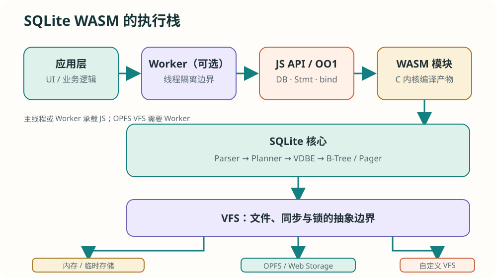
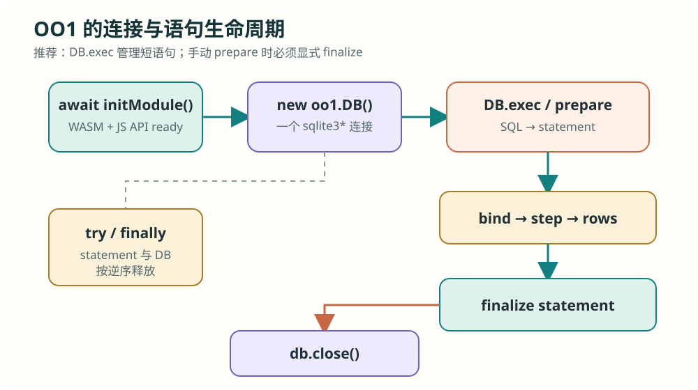
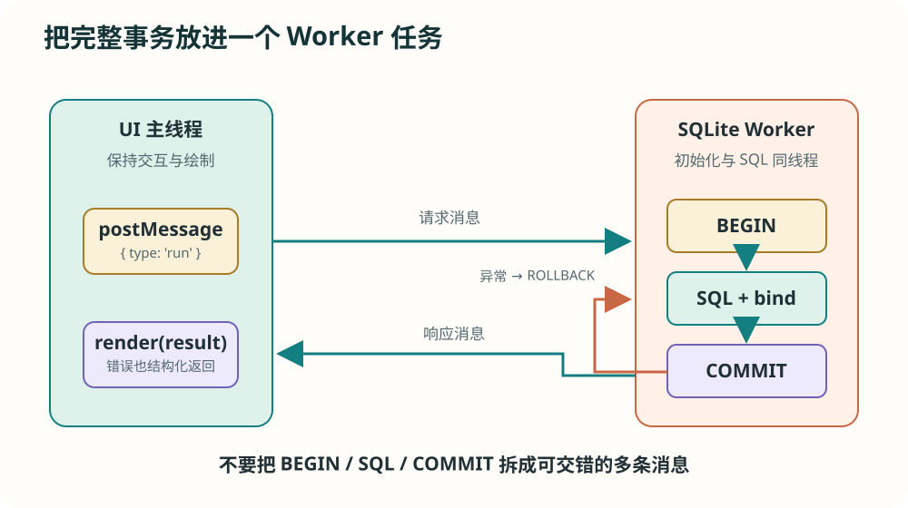
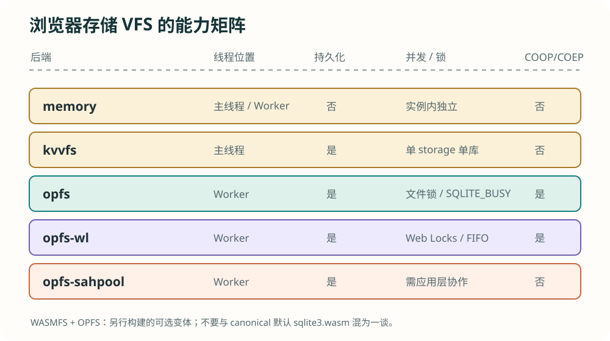

SQLite WASM：从 C 内核到浏览器持久化
同一套 SQLite SQL 引擎如何进入浏览器？关键不在于把数据库“改写成 JavaScript”，而在于保留 C 内核，通过 WebAssembly 执行，再由 JS API、Worker 与 VFS 接通浏览器的线程和存储模型。
阅读提示：可轻点图解打开独立矢量原图；窄屏图解支持横向查看细节。
1. WASM 执行栈：数据库内核没有变成 JavaScript
SQLite WASM 的核心仍是 SQLite C 实现。构建系统通过 Emscripten 将 SQLite 源码编译为 WebAssembly 模块，并生成负责加载、内存适配和 API 暴露的 JavaScript 胶水层。应用导入 ES module 初始化函数，再调用对象式 API（OO1）或较低层的 C API 绑定。
SQL 解析、查询规划、VDBE 执行、B-Tree、Pager 等核心职责仍由 SQLite 内核承担。变化发生在系统边界：传统平台 VFS 面向操作系统文件与锁；浏览器环境则必须通过浏览器允许的存储能力实现文件访问。WebAssembly 本身不会获得 Node.js 文件系统权限，也不会自动获得 DOM 权限。

官方 npm 包 @sqlite.org/sqlite-wasm 将官方 SQLite WASM 发布物包装为 ES module，并补充 TypeScript 类型；它不改写底层 SQLite WASM 实现。阅读源码时应区分三层：SQLite 核心源码、ext/wasm/ 的绑定与 VFS 适配、npm 包装层。
2. 从 ESM 初始化到 OO1：把 C API 变成可管理的对象
常规用法是先导入初始化函数，再等待模块就绪。sqlite3InitModule() 完成 WASM 装载后返回 API 对象。sqlite3.oo1.DB 对应一个 SQLite 数据库连接；它不是另一个 SQL 引擎，而是对底层 sqlite3* 句柄的 JavaScript 封装。
import sqlite3InitModule from '@sqlite.org/sqlite-wasm';
const sqlite3 = await sqlite3InitModule();
console.log('SQLite', sqlite3.version.libVersion);
const db = new sqlite3.oo1.DB(':memory:');
try {
db.exec('CREATE TABLE item(id INTEGER PRIMARY KEY, label TEXT)');
db.exec({
sql: 'INSERT INTO item(label) VALUES ($label)',
bind: { $label: 'WASM memory smoke test' }
});
const rows = db.selectObjects(
'SELECT id, label FROM item ORDER BY id'
);
console.log(rows);
} finally {
db.close();
}DB.exec() 适合执行一条或多条 SQL，并在内部管理 prepared statement 的 prepare、step 和 finalize 生命周期。需要逐行控制或复用语句时才显式调用 prepare()；此时必须在 finally 中 finalize，否则未释放的 statement 可能延长文件锁持有时间。
参数绑定仍应使用占位符，而不是字符串拼接。OO1 支持数组或对象形式的绑定；例如对象键 $label 对应 SQL 中的 $label。对象行模式遇到重名列时不能保留全部同名字段；需要严格列顺序时应选择数组行模式。

3. Worker 是线程边界，不是另一种数据库
WASM 运算仍可能占用 CPU。若把大量 SQL 放在 UI 主线程，页面绘制与交互就会受到影响。更稳妥的方式是让应用创建专用 Worker，在 Worker 内导入并初始化 SQLite WASM，再由主线程通过消息传递任务和结果。Worker 内仍然使用同一套 OO1 API。

仓库中的 examples/26_wasm/main.js 和 worker.js 给出最小结构。主线程发送 {type:'run'}；Worker 初始化 SQLite、打开数据库、执行 SQL、关闭连接并返回结果。正式应用还应为消息增加 request ID、超时、取消语义和结构化错误对象。
// main.js
const worker = new Worker(new URL('./worker.js', import.meta.url), {
type: 'module'
});
worker.postMessage({ type: 'run' });
worker.addEventListener('message', ({ data }) => {
if (data.type === 'success') render(data.rows);
else reportError(data.error);
});
// worker.js：初始化与 SQL 都在 Worker 内
import sqlite3InitModule from '@sqlite.org/sqlite-wasm';
self.addEventListener('message', async ({ data }) => {
if (data.type !== 'run') return;
const sqlite3 = await sqlite3InitModule();
const db = new sqlite3.oo1.DB(':memory:');
try {
db.exec('BEGIN');
db.exec("CREATE TABLE IF NOT EXISTS t(x TEXT)");
db.exec("INSERT INTO t VALUES('done')");
db.exec('COMMIT');
self.postMessage({
type: 'success',
rows: db.selectObjects('SELECT x FROM t')
});
} catch (e) {
try { db.exec('ROLLBACK'); } catch {}
self.postMessage({ type: 'error', error: String(e) });
} finally {
db.close();
}
});Worker 不是天然的事务调度器。不要把 BEGIN、若干条 SQL 和 COMMIT 分散在多个可交错的消息中；同一连接的事务应在一个受控任务内完成。官方 Worker1 / Promiser1 消息 API 自 2026-04-15 起已标记 deprecated，不再推荐新项目采用。新项目更适合在应用自建 Worker 中直接加载模块，并定义自己的消息协议。
4. VFS 决定数据活多久：浏览器存储并非一个选项
SQLite 通过 VFS 抽象文件打开、读写、同步和锁。WASM 环境中的不同 VFS 使用不同浏览器 API，能力和约束差异很大。选择时要同时看运行线程、是否持久化、并发方式、浏览器兼容和部署响应头，而不是只看“能否打开一个数据库文件”。

| 后端 | 可用线程 | 持久化 | 主要边界 |
|---|---|---|---|
:memory: | 主线程 / Worker | 否 | 实例生命周期结束即丢失 |
kvvfs | 主线程 | localStorage / sessionStorage | 每种 storage 最多一个数据库；容量小、编码开销高 |
opfs | Worker | 是 | SyncAccessHandle 文件锁；需要 COOP/COEP |
opfs-wl | Worker | 是 | Web Locks；需要 Atomics.waitAsync() |
opfs-sahpool | Worker | 是 | 吞吐量高；多实例共享需应用层协调；不要求 COOP/COEP |
| WASMFS + OPFS | 取决于定制构建 | 是 | 需单独构建，不属于 canonical 默认 WASM 产物 |
kvvfs 将数据库页编码后存入浏览器 Web Storage。它适合小型演示或没有 OPFS 时的轻量回退，不适合大型工作负载：容量通常只有几 MB，且每个 storage 对象只能容纳一个数据库。
常规 opfs VFS 只在 Worker 中可用。其同步文件访问代理依赖 SharedArrayBuffer，因此服务器必须提供 Cross-Origin-Opener-Policy: same-origin 与 Cross-Origin-Embedder-Policy: require-corp（或适用场景下的 credentialless）。缺少这些响应头时，常规 OPFS VFS 不会加载。
opfs-wl 在 3.53.0 加入，以 Web Locks 代替原有锁协议；它要求 Atomics.waitAsync()，所以不是所有支持 OPFS 的浏览器都能使用。opfs-sahpool 使用预分配的 SyncAccessHandle 池，官方文档将其定位为高性能选项，但它默认不提供透明的多标签页并发。若选择它，必须理解 pool 容量、文件名映射和 pause/unpause 协作接口。
5. OPFS 锁、WAL 与部署约束
OPFS 的同步访问句柄会独占锁定文件。不要把桌面数据库服务器的并发预期直接搬到浏览器：两个标签页同时打开同一个 OPFS 数据库，第二个实例可能收到锁错误。即使单标签页内，也应避免长事务、长时间不 reset 的 statement，以及同一 Worker 中对同一个文件打开多个连接。
官方持久化指南建议把数据库工作拆成短小的 I/O 区间，并在应用层处理 SQLITE_BUSY。锁冲突是正常的运行时状态，不应该被当成“数据库文件坏了”。opfs-unlock-asap=1 可以作为特定并发问题的调优手段，但它可能增加 I/O 成本，不应在没有测量时默认启用。
GitHub Pages 可以托管静态文件，但不能仅靠仓库中的 HTML 自动设置 COOP/COEP 响应头。若应用必须使用常规 OPFS VFS，应部署到可控制这些响应头的静态站点或应用服务器。示例中的 vite.config.js 为开发服务器和 preview 配置了相应头；生产环境必须在真正的托管层重复配置。
6. Node.js 与浏览器不是同一套持久化能力
官方 npm 包当前将 Node.js 支持限定为内存数据库，不提供 Node.js 文件持久化后端。浏览器 Worker + OPFS 的代码不能因为换成 Node.js import 就自动变成文件数据库。若 Node.js 应用需要持久化，应根据部署环境评估原生绑定、SQLite CLI/子进程或其他明确支持文件存储的方案。
这也解释了为什么 examples/26_wasm/node-smoke.mjs 只创建 :memory: 数据库：它验证模块初始化、绑定参数、查询结果和连接释放，不伪装成磁盘持久化测试。
自测：把数据库代码放进 Worker，就自动获得 OPFS 持久化了吗？
没有。Worker 只是线程执行位置。只有当当前 WASM 构建、浏览器 API 和 VFS 初始化都满足条件时，OpfsDb 才可用。否则仍可能是内存数据库；应用必须检测能力并明确报告实际后端。
7. 源码定位与可复现实验
SQLite 3.54.1 的 WASM 构建入口在 ext/wasm/GNUmakefile；生成物的 API 装配由 ext/wasm/api/ 下的 prologue、OO1、VFS 和 Worker 模块构成。重点文件包括：
ext/wasm/GNUmakefile：构建目标、Emscripten 参数、JS 文件装配顺序与 WASMFS 变体。ext/wasm/api/sqlite3-api-oo1.c-pp.js：DB / Stmt 的对象式封装。ext/wasm/api/sqlite3-vfs-opfs.c-pp.js：OPFS VFS 实现。ext/wasm/api/sqlite3-vfs-opfs-wl.c-pp.js：Web Locks 变体。ext/wasm/api/sqlite3-vfs-opfs-sahpool.c-pp.js：SyncAccessHandle pool 变体。ext/wasm/api/sqlite3-worker1.c-pp.js：旧 Worker1 API，仅用于理解兼容层。
cd examples/26_wasm
npm install
npm run test:node
# 浏览器 Worker + OPFS：Vite 会注入 COOP / COEP 响应头
npm run dev
# 打开本地地址，点击“运行一次 SQL 实验”Node smoke test 断言查询结果并确保连接关闭；浏览器示例检测 OpfsDb 是否存在，不可用时明确回退到内存模式。浏览器持久化验证应在目标浏览器、目标部署响应头和实际存储配额下单独进行，不能用 Node 的内存测试替代。
官方资料与版本边界
- sqlite/sqlite-wasm README：官方 npm 包、Node.js 支持范围、Worker 示例和弃用说明。
- SQLite WASM OO1 API：DB、Stmt、OpfsDb 与查询绑定。
- SQLite WASM Persistent Storage：kvvfs、OPFS、opfs-wl、sahpool、WAL 与并发约束。
- Worker1 / Promiser API：旧消息式 API 的限制和弃用状态。
- SQLite 3.54.1 ext/wasm/GNUmakefile：版本固定的 WASM 构建入口。
- SQLite 3.54.1 OPFS VFS source 与 OO1 source。